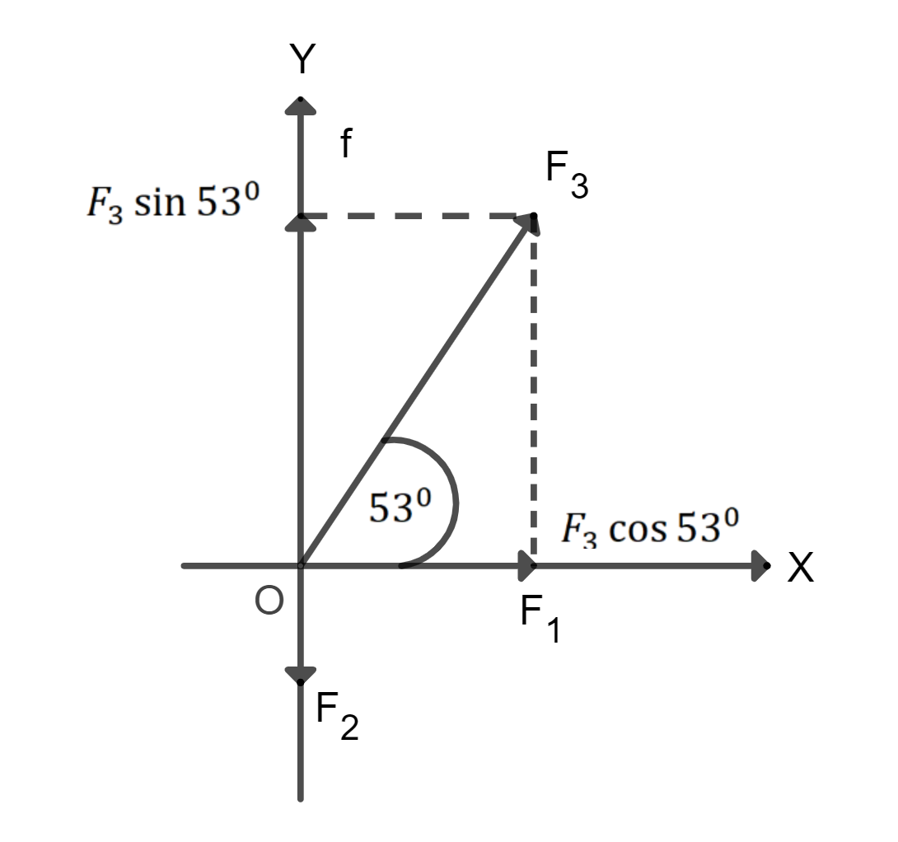

- Menentukan vektor resultan dengan rumus resultan
-
Dua vektor $F_1$ dan $F_2$ memiliki panagkal
berimpit dan masing-masing memiliki besar 3 N dan 4 N. Jika sudut apit
antara kedua vektor adalah $60^0$, tentukan:
- Vektor resultan $R=F_1+F_2$ dan
- Vektor selisih $S=F_1-F_2$.
 Gambar 12. Sketsa soal
Gambar 12. Sketsa soalPerhatikan, untuk $R=F_1+ F_2$, sudut apit adalah sudut antara $F_1$ dan $F_2$, sedangkan untuk $S=F_1- F_2$, sudut apit adalah antara $F_1- F_2$. Selanjutnya, hitung besar R dan S dengan rumus resultan [persamaan (3-6)] dan hitung arah R dan S terhadap acuan $F_1$ dengan rumus sinus
- Sudut apit antara $F_1$ dan $F_2$ adalah
$\angle AOB = 60^0$
$cos\hspace{0.1cm} \angle AOB = \frac{1}{2}$
Besar vektor resultan R menurun (3-6) adalah sebagai berikut
$R=\sqrt{F_1^2+F_2^2+2F_1F_2\hspace{0.1cm}cos\hspace{0.1cm}\angle AOB}$
$\hspace{0.4cm}=\sqrt{(3)^2 +(4)^2+2(3)(4)\frac{1}{2}}$
$\hspace{0.4cm}=\sqrt{37}N$
Arah vektor resultan R terhadap acuan $F_1$ yaitu, sudut β (lihat Gambar 12) dihitung dengan menggunakan rumus sinus dalam $\angle AOC$
$\frac{AC}{sin \beta }\hspace{0.35cm}= \frac{OC}{sin \hspace{0.1em} \angle AOC}$ $\hspace{2.4cm} \angle AOC = (190-160)^0 = 120^0$
$sin \hspace{0.1em} \beta \hspace{0.2cm}= \frac{AC \hspace{0.1em} sin \hspace{0.1em}120^0}{OC}$ $\hspace{2.4cm} AC = F_2 = 4N; \hspace{0.2cm} OC=R=\sqrt{37}N$
$sin \hspace{0.1em} \beta \hspace{0.2cm} =\frac{4(\frac{1}{2}\sqrt3)}{\sqrt {37}}=0,567$
$\beta \hspace{0.89cm} =34,7^0$
-
Sudut apit antara $F_1$ dan $-F_2$
(lihat Gambar 12) adalah sebagai berikut.
$\angle AOE = (180-160)^0 = 120^0$
$COS \hspace{0.1cm} \angle AOE= cos\hspace{0.1cm}120^0= -\frac{1}{2}$
$ S= \sqrt{F_1^2 +F_2^2 - 2F_1F_2 \hspace{0.1cm} cos\theta}$
$S=\sqrt{3^2 + 4^2-2 \times 3 \times 4 \hspace{0.1cm} cos \hspace{0.1cm} 120^0}$
$S= \sqrt{9 + 16 - 24.(-\frac{1}{2})}$
$S =\sqrt {9+16+12}$
$S=\sqrt{37}=6,08N$
- Menentukan vektor resultan dengan metode komponen vektor
-
Tentukan vektor resultan beserta besar dan arahnya
dari ketiga gaya berikut,
Gambar 13. Analisis soal
Penyelesaian
Gaya 6 N ke kanan bawah ditulis $F_1=6i$
Gaya 3 N ke bawah ditulis $F_2=-3j$
Gaya 10 N membentuk sudut $\theta=53^0$ terhadap sumbu X+ kita tulis
$F_3 = F_{3x} i + F_{3y} j$
$F_{3x} = F_3 \hspace{0.1cm} cos \hspace{0.1cm} 53^0=10 (0,6)=6 N$
$\hspace{10cm} \leftrightarrow \hspace{0.3cm} F_3 =6i+8j $
$F_3y = F_3 \hspace{0.1cm} sin \hspace{0.1cm} 53^0=10 (0,8)=8 N$
vektor resultan ketiga gaya adalah sebagai berikut.
$F_1+F_2+F_3$
$F=6i+(-3j)+(6i+8j)$
$F=(6i+6i)+(-3j+8j)$
$F=12i+5jN$
Besar vektor resultan adalah sebagai berikut.
$F= \sqrt{(12)^2 + (5)^2}$
$\hspace{0.45cm} = 13 N$
Arah vektor resultan adalah sebagai berikut.
$ tan \theta = \frac{5}{12}$ (kuadran I)
$\hspace{0.65cm} \theta=tan^{-1} (\frac{5}{12})$
$= 22,6^0$
Jadi, vektor resultan ketiga gaya adalah F= (12i+5j) N dengan besar 13N dan membentuk sudut $22,6^0$ terhadap sumbu X+.